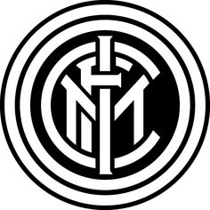
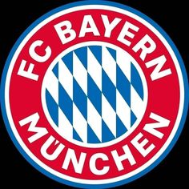

Welcome to InfoClubSport
Real Madrid
Real Madrid Club de Fútbol commonly referred to as Real Madrid, is a Spanish professional football club based in Madrid. The club competes in La Liga, the top tier of Spanish football.
Founded in 1902 as Madrid Football Club, the club has traditionally worn a white home kit since its inception. The honorific title real is Spanish for "royal" and was bestowed to the club by King Alfonso XIII in 1920 together with the royal crown in the emblem. Real Madrid have played their home matches in the 85,000-capacity Santiago Bernabéu in central Madrid since 1947. Unlike most European sporting entities, Real Madrid's members (socios) have owned and operated the club throughout its history.
The official Madrid anthem is the "Hala Madrid y nada más", written by RedOne and Manuel Jabois. The club is one of the most widely supported in the world, and is the most followed football club on social media according to the CIES Football Observatory as of 2023 and was estimated to be worth $6.6 billion in 2024, making it the world's most valuable football club. In 2024, it was the highest-earning football club in the world, with an annual revenue of €831.4 million.
Inter Milan
Football Club Internazionale Milano, commonly referred to as Internazionale or simply Inter, and colloquially known as Inter Milan in English-speaking countries,[5][6][7] is an Italian professional football club based in Milan, Lombardy. Inter is the only Italian side to have always competed in the top flight of Italian football since its debut in 1909.
Founded in 1908 following a schism within the Milan Foot-Ball and Cricket Club (now AC Milan), Inter won its first championship in 1910. Since its formation, the club has won 36 domestic trophies, including 20 league titles, nine Coppa Italia, and eight Supercoppa Italiana. From 2006 to 2010, the club won five successive league titles, equalling the all-time record at that time. They have won the European Cup/Champions League three times: two back-to-back in 1964 and 1965, and then another in 2010. Their latest win completed an unprecedented Italian seasonal treble, with Inter winning the Coppa Italia and the Scudetto the same year. The club has also won three UEFA Cups, two Intercontinental Cups and one FIFA Club World Cup.
Bayern Munich
 Bayern Munich or FC Bayern, is a German professional sports club based in Munich, Bavaria. They are best known for their professional men's association football team, who play in the Bundesliga, the top tier of the German football league system. Bayern are the most successful club in German football history, having won a record 33 national titles, including eleven consecutively from 2013 to 2023, and 20 national cups, along with numerous European honours.
Bayern Munich was founded in 1900 by eleven players, led by Franz John. Although Bayern won its first national championship in 1932, the club was not selected for the Bundesliga at its inception in 1963. The club had its period of greatest success in the mid-1970s when, under the captaincy of Franz Beckenbauer, they won the European Cup three consecutive times (1974–1976). Overall, Bayern have won six European Cup/UEFA Champions League titles (a German record), winning their sixth title in the 2020 final as part of the Treble, after which it became the second European club to achieve the feat twice. Bayern has also won one UEFA Cup, one European Cup Winners' Cup, two UEFA Super Cups, two FIFA Club World Cups and two Intercontinental Cups, making it one of the most successful European clubs internationally, and the only German club to have won both international titles. Bayern players have accumulated five Ballon d'Or awards, two The Best FIFA Men's Player awards, five European Golden Shoe and three UEFA Men's Player of the Year awards, including UEFA Club Footballer of the Year.